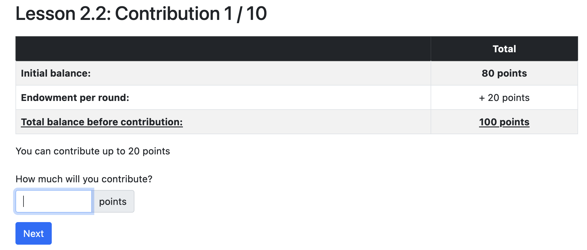

<!DOCTYPE html>
<html lang="en">

<head>
  <meta charset="utf-8" />
  <meta name="viewport" content="width=device-width, initial-scale=1.0, maximum-scale=1.0, user-scalable=no" />

  <title>Game Theory Basics</title>
  <link rel="shortcut icon" href="./../../../assets/favicon.ico" />
  <link rel="stylesheet" href="./../../../dist/reset.css" />
  <link rel="stylesheet" href="./../../../dist/reveal.css" />
  <link rel="stylesheet" href="./../../../assets/styles/PBA-theme.css" id="theme" />
  <link rel="stylesheet" href="./../../../css/highlight/shades-of-purple.css" />

  <link rel="stylesheet" href="./../../.././assets/styles/custom-classes.css" />

</head>

<body class="site">
  <header class="site-header">
    <!-- This logo is a link only on the watching server, not the production build -->
      
  </header>
  <main class="reveal">
    <article class="slides">
      <section  data-markdown><script type="text/template">

# Game Theory Basics

<aside class="notes"><p>Game theory is a field of study at the intersection of mathematics and economics. It consider an economic system to be a game and people to be players. According to the rules of the game, it analyzes the players&#39; best strategies and then uses this analysis to explain the observed behavior of the economic system.</p>
<p>Game theory is an interesting an powerful tool, because it&#39;s fairly simple and intuitive, yet extremely powerful to make predictions. Hence, it&#39;s a good idea to learn game theoretical principles and keep them in the back of your mind when designing economic systems.</p>
</aside></script></section><section  data-markdown><script type="text/template">
# Outline

<pba-flex center>

- Lesson (60 minutes)
  - [What is Game Theory?](#what-is-game-theory)
  - [What is a Game?](#what-is-a-game)
  - [Types of Games](#types-of-games)
- Workshop & Activities (120 minutes)
  - Discussions & more games

</pba-flex>
</script></section><section  data-markdown><script type="text/template">
## What is Game Theory?

> Show me the incentives and I will show you the outcome.<br/>-- Charlie Munger --

<aside class="notes"><ul>
<li>Game theory is all about the power of incentives.</li>
<li>Incentives drive behavior, and behavior determines the outcome in a particular strategic situation.</li>
<li>Knowing or being able to predict how incentives determine outcomes is very important when designing systems, which is what you will all do at some point, or already do.</li>
</ul>
</aside></script></section><section  data-markdown><script type="text/template">
## Game Theory in Web3

In the context of blockchains, game theoretic reasoning is used for _modelling_ and _understanding_.
</script></section><section  data-markdown><script type="text/template">
## Modelling

- **Tokenomics:** Macroeconomic design of a token (inflation, utility, etc.).
- **Business Logic**: Interaction of the token with different modules of a protocol.
- **Consensus:** Providing sufficient incentives to guarantee that participating nodes agree on a distributed state of the network.
- **Collaboration:** Nudging (aggregated) human behavior and their interaction with the protocol.
</script></section><section  data-markdown><script type="text/template">
## Understanding

- **Economics:** Interaction between different protocols and how finite resources are allocated among all of them.
- **Security:** Testing economic security of protocols against various types of attacks.

<aside class="notes"><p>You wont recognize these terms just yet, but next module we will dive deep into them.
Keep them in mind as we move forward: this is <em>why</em> we study Economics in this academy.</p>
<ul>
<li>Blockchain economics/tokenomics is all about understanding how people will act in situations where information and rules are transparent.</li>
<li>We’ll cover the basics of game theory today, but let’s look through some of the core moments in this field so that you can go as deep as you’d like.</li>
</ul>
</aside></script></section><section  data-markdown><script type="text/template">
## History of Game Theory

- Early “game theoretic” research early 19th century, still relevant.
- The systematic study of games started in the 20th century.
- Modern game theory is used in economics, biology, sociology, political science, psychology, among others.

In economics, game theory is used to analyze many different strategic situations like auctions, industrial economics, and business administration.

<aside class="notes"><p><strong>History of Game Theory</strong></p>
<ul>
<li><p>Early “game theoretic” research that still resonates today goes way back into the early 19th century:</p>
<ul>
<li>1838, Antoine Augustin Cournot: Cournot competition, uses an early, simplified version of Nash equilibrium.</li>
<li>1881: Francis Edgeworth: trade with two consumers and two goods.</li>
<li>1913, Ernst Zermelo: chess, first formal application of backward induction.</li>
</ul>
</li>
<li><p>The systematic study of games started in the 40/50s of the 20th century:</p>
<ul>
<li>1944: John von Neumann and Oscar Morgenstern publish <em>Theory of Games and Economic Behavior</em>.</li>
<li>1949: John Nash writes his dissertation.
His best known contribution is on the general existence of a solution (the Nash equilibrium) for the important class of finite games.</li>
<li>1963: Douglas Gale and Lloyd Shapley publish seminal work on matching.</li>
<li>1973: John Harsanyi provides important insights into mixed strategies.</li>
<li>1976: Robert Aumann publishes seminal work on common knowledge of rationality.</li>
</ul>
</li>
</ul>
</aside></script></section><section  data-markdown><script type="text/template">
## Game theory is _abstract_

Game theoretic models aim to get at the essence of a given strategic problem.
This often requires many simplifying assumptions.

- Pro: _Abstraction_ makes the problem amenable to analysis and helps to identify the key incentives at work.
- Con: A certain lack of realism.
- In any case: Modeling a strategic situation always entails a tradeoff between tractability and realism.

<aside class="notes"><ul>
<li>Need to explain what we mean by lack of realism:<ul>
<li>Often people have more choices than we model.</li>
<li>Often people take other things into consideration when making choices than the model allows.</li>
<li>Often people know more/less than we assume.</li>
</ul>
</li>
<li>How to resolve the tradeoff between tractability and realism is often subjective and depends on the taste of the modeler.</li>
</ul>
</aside></script></section><section  data-markdown><script type="text/template">
# What is a Game?
</script></section><section  data-markdown><script type="text/template">
## Definition: (Economic) Game

A game is a strategic interaction among several players, where _common knowledge_ among all the players of the game includes:

1. all the possible _actions_ of the players
1. all the possible _outcomes_
1. how each combination of actions affects the outcome
1. how the players value the different outcomes
</script></section><section  data-markdown><script type="text/template">
## Definition: Common Knowledge

An event $X$ is common knowledge if:

<pba-flex center>

1. everyone knows $X$,
1. everyone knows that everyone knows $X$,
1. everyone knows that everyone knows that everyone knows $X$,
1. ... and so on ad infinitum.

</pba-flex>
</script></section><section  data-markdown><script type="text/template">
### Examples: Common Knowledge

<pba-cols>
<pba-col>

##### Auctions

- Actions: Bids.
- Outcome: Winner and Payment.

</pba-col>
<pba-col>

##### Price-competition<br/>between firms

- Actions: Price charged.
- Outcome: Demand for each firm, profit of each firm.

</pba-col>
</pba-cols>

<aside class="notes"><p>Crucial feature of a game: outcome not only depends on own actions but also on the actions of the other players.</p>
</aside></script></section><section  data-markdown><script type="text/template">
## Types of games

Game theory distinguishes between:

<pba-flex center>

- static & dynamic games
- complete & incomplete information games

</pba-flex>
</script></section><section  data-markdown><script type="text/template">
## Static and Dynamic Games

|                  | Static Game                                                                              | Dynamic Game                                                                                           |
| ---------------- | ---------------------------------------------------------------------------------------- | ------------------------------------------------------------------------------------------------------ |
| Definition       | All players take their actions at the same time                                          | Players move sequentially and possibly multiple times, (at least partially) observing previous actions |
| Simple Example   | Rock-Paper-Scissors                                                                      | Tic-Tac-Toe                                                                                            |
| Economic Example | Sealed-bid auction. All bidders submit their bids simultaneously (in a sealed envelope). | English auction. Auctioneer publicly raises price if at least one bidder accepts the price.            |
</script></section><section  data-markdown><script type="text/template">
## Completeness of Information in Games

|                       | Game of Complete Information                                         | Game of Incomplete Information                                           |
| --------------------- | -------------------------------------------------------------------- | ------------------------------------------------------------------------ |
| Information available | All information relevant to decision-making is known to all players. | Not all information relevant to decision-making is known to all players. |
| Simple Example        | Chess                                                                | Poker                                                                    |
| Economic Example      | Sealed auction for seized Bitcoin.                                   | Used-car market: the resale value of a used car is opaque.               |

<aside class="notes"><ul>
<li>There is also the notion of perfect and imperfect information which we should skip here.
More info: <a href="https://economics.stackexchange.com/questions/13292/imperfect-vs-incomplete-information">https://economics.stackexchange.com/questions/13292/imperfect-vs-incomplete-information</a></li>
</ul>
</aside></script></section><section  data-markdown><script type="text/template">
<!-- .slide: data-background-color="#4A2439" -->

# Quiz
</script></section><section  data-markdown><script type="text/template">
### Three firms want to hire an engineer...

<pba-cols>
<pba-col>

- The engineer brings added value to each firm of 300,000 USD per year.
- The payoff of the firm is known by everyone to be 300,000 USD minus the salary.
- The payoff to the engineer is salary minus cost of working, which is known to everyone.
- All firms make a salary offer at the same time.

</pba-col>
<pba-col>

### Quiz Questions:

1. Is this game static or dynamic?
   What would need to change in the description of the game such that it would fall in the other category?
1. Is this game of complete or incomplete information?
   What would need to change in the description of the game such that it would fall in the other category?

</pba-col>
</pba-cols>

<aside class="notes"><ol>
<li><p>The game is static.
For it to be dynamic, firms would need to make offers sequentially, <em>knowing what the firms before had offered</em>.</p>
</li>
<li><p>The game is of complete information.
To make information incomplete, we would need to have that the value of hiring the engineer differs between firms and is unknown between firms.
Or that the cost of working for the engineer is not known to the firms.
The point is that we need to have uncertainty over payoffs.</p>
</li>
</ol>
<ul>
<li><p>This lesson focuses on static games of complete information.</p>
</li>
<li><p>When we look at auctions in Session 3.3, we will also consider games of incomplete information, both dynamic and static.</p>
</li>
</ul>
</aside></script></section><section  data-markdown><script type="text/template">
<!-- .slide: data-background-color="#4A2439" -->

# Well-known Games
</script></section><section  data-markdown><script type="text/template">
## Prisoners' Dilemma

A fundamental problem:

> Even though everyone knows there is a socially optimal course of actions, no one will take it because they are rational utility maximizers.

It's a static game of complete information.

<aside class="notes"><p>One of the most famous games studied in game theory.</p>
<ul>
<li>Static because both players take their action at the same time.</li>
<li>Complete because everybody is aware of all the payouts.</li>
</ul>
</aside></script></section><section  data-markdown><script type="text/template">
## Bonnie and Clyde

Bonnie and Clyde are accused of robbing two banks:

- The evidence for the first robbery is overwhelming and will certainly lead to a conviction with two years of jail.
- The evidence for the second robbery is not sufficient and they will be convicted only if at least one of them confesses to it.
</script></section><section  data-markdown><script type="text/template">
## Bonnie and Clyde

In the interrogation they both are offered the following:

- If you both confess you both go to jail for 4 years.
- If you do not confess but your partner does, you go to jail for 5 years: 1 extra year for obstruction of justice.
- However, if you confess but your partner does not, we reduce your jail time to one year.

<aside class="notes"><p>They are interrogated in different rooms, apart from each other.</p>
</aside></script></section><section  data-markdown><script type="text/template">
## Bonnie and Clyde

- **Cooperate** ($C$) with each other and not say anything
- **Defect** ($D$) and confess their crime


<aside class="notes"><p>They can either cooperate or defect
First payoff is Clyde, second is Bonnie</p>
</aside></script></section><section  data-markdown><script type="text/template">
## Bonnie and Clyde


Choosing D is a _dominant strategy_: a strategy that is always optimal for a player, regardless of that the other players do.

<aside class="notes"><p>No matter what Clyde does, D is always the best choice.
So, they end up both defecting, resulting in 4 years each.
It would be in their best interest to cooperate and not to say anything.
This would minimize the total jail time for the two.
However, both Bonnie and Clyde are rational utility maximizers.
So, they end up in a situation where they not only fare worse <em>individually</em> (4 instead of 2) but also <em>jointly</em> (the total jail time is 8 years rather than 4 years).</p>
</aside></script></section><section  data-markdown><script type="text/template">
## Prisoners' Dilemma IRL

**[Nuclear Arms Race](https://www.history.com/topics/cold-war/arms-race)**

NATO and Russia prefer no arms race to an arms race.
Yet, having some arms is preferable to having no arms, irrespective of whether the other one is armed.

**[OPEC](https://www.opec.org/opec_web/en/)**

Limiting oil supply is in the best interest of all.
However, given the high price that thus results, everyone has an incentive to increase individual oil supply to maximize profits.

<aside class="notes"><p>OPEC: Organization of the Petroleum Exporting Countries. It is something like a cartel that agree on limiting the global oil production and keep the oil price artificially high.</p>
<p>OPEC and Cartels generally seems to overcome the Prisoners&#39; Dilemma...
More on that later.</p>
</aside></script></section><section  data-markdown><script type="text/template">
## Coordination Game

The prediction of play in the Prisoner's Dilemma was easy: both will defect.
This is the optimal thing to do no matter what the other player does.

In other games, predictions of play are not so clear.
One instance is the coordination game.
</script></section><section  data-markdown><script type="text/template">
## Coordination Game

> A coordination game is a type of static game in which a player will earn a higher payoff when they select the same course of action as another player.
</script></section><section  data-markdown><script type="text/template">
## Coordination Game Example

<pba-cols>
<pba-col>

- Choose $L$ or $R$.
- The numbers represent the payoffs a player receives.
- The players only obtain utility if they coordinate their actions.

</pba-col>
<pba-col>


</pba-col>
</pba-cols>

<aside class="notes"><p>Examples:</p>
<ul>
<li>Driving on the right/left side of the road.</li>
<li>Money adoption.</li>
<li>Standard adoption.</li>
</ul>
</aside></script></section><section  data-markdown><script type="text/template">
## Coordination Game Example

<pba-cols>
<pba-col>

- The coordination game has two outcomes $(L,L)$ and $(R,R)$ that stand out.
- Clearly, if the other player chooses $L$ ($R$), then it is optimal for the other to do so also.
- So, in the outcomes $(L,L)$ and $(R,R)$ the players choose mutually optimal actions.

</pba-col>
<pba-col>


</pba-col>
</pba-cols>

<aside class="notes"><ul>
<li>That is, for both players it holds:<ul>
<li>Playing $L$ is a <em>best response</em> to the other player playing $L$.</li>
<li>Playing $R$ is a <em>best response</em> to the other player playing $R$.</li>
</ul>
</li>
</ul>
</aside></script></section><section  data-markdown><script type="text/template">
## Coordination Game Example

<pba-cols>
<pba-col>

- Both $(L,L)$ and $(R,R)$ are instances of Nash equilibrium.
- By their very nature, coordination games always have multiple equilibria.
- The outcome $(D,D)$ in the Prisoner's dilemma is the unique Nash equilibrium.

</pba-col>
<pba-col>


</pba-col>
</pba-cols>

_Nash Equilibrium:_ Set of recommended strategies, one per player, so that if other players follow the recommendation then it is optimal for you to follow it as well.

<aside class="notes"><p>Nash equilibrium: If other players follows the recommended strategy, then the best response for you is to do the same. As the same logic is true for other players, it&#39;s reasonable to assume that everybody will indeed follow the recommended strategy.</p>
<p>However, a Nash equilibrium is a weaker notion than a dominant strategy, because if the other players don&#39;t follow the recommended strategy, it is not clear what your best response should be.</p>
</aside></script></section><section  data-markdown><script type="text/template">
## Equilibrium selection

- So, which outcome does the theory of Nash equilibrium predict in the coordination game?
- Sometimes people switch between equilibria (if they are made to)...


_Sweden, 1967._

<aside class="notes"><ul>
<li>Outcome?
Answer: neither.</li>
</ul>
</aside></script></section><section  data-markdown><script type="text/template">
## Schelling Points

- Nash equilibrium _does not_ predict which strategies the players actually take.
- This is especially pronounced in games with multiple equilibria (e.g., coordination games).
- There are theories that offer insights into which strategies players actually take.
</script></section><section  data-markdown><script type="text/template">
## Schelling Points

> If you are to meet a stranger in New York City, but you cannot communicate with the person, then when and where will you choose to meet?

Literally _any_ point and time is a Nash equilibrium...
However, most people responded: noon at (the information booth at) Grand Central Terminal.

Basic idea: in case of multiple equilibria, **social norms may help to choose one.**

<aside class="notes"><p>In the 1950s American economist Thomas Schelling ran a couple of informal experiments in which he asked his students (quote on slide)</p>
<p>This is a coordination game.</p>
</aside></script></section><section  data-markdown><script type="text/template">
# Summary (so far...)

- Typology of games: static/dynamic, complete/incomplete information.
- Two canonical games: Prisoner's Dilemma, Coordination Game.
- The Prisoner's Dilemma has a unique Nash equilibrium, which is dominant, whereas the Coordination game has two Nash equilibria.
- To select among multiple equilibria, the notion of a _Schelling_ point is sometimes invoked.
</script></section><section  data-markdown><script type="text/template">
## Why are theories of equilibrium important?

- Nash Equilibria are used to predict the behavior of others in a closed system.
- If you can identify a unique Nash Equilibrium or the Schelling point in a system, you have a strong prediction of user behavior.
- So, you can begin to drive user behavior by designing incentives accordingly.

<aside class="notes"><ul>
<li>... a closed system like a blockchain!</li>
</ul>
</aside></script></section><section  data-markdown><script type="text/template">
## Public Goods

- **Non-excludable** No-one can be excluded from consumption
- **Non-rivalrous** My consumption does not affect yours

e.g., fireworks, street-lighting.

<aside class="notes"><p>We will now talk about public goods and common goods, which are goods enjoyed by everyone.</p>
<p>This is, of course, a very important and very tricky class of goods in a collective.</p>
</aside></script></section><section  data-markdown><script type="text/template">
## Common Goods

- **Non-excludable** No-one can be excluded from consumption
- **Rivalrous** My consumption reduces your possibility to consume

i.e., a public park, an office coffee machine.

<aside class="notes"><ul>
<li>Recall: Public good was <em>non</em>-rivalrous.</li>
</ul>
<p>Examples:</p>
<ul>
<li>Public park: anyone can go; too many people spoil the experience or kills the grass.</li>
<li>Coffee machine in the office: anyone can use it; too many users may cause congestion or the amount of coffee may be limited.</li>
</ul>
</aside></script></section><section  data-markdown><script type="text/template">
## Public vs. Common good

Main difference is that in a common good your consumption reduces the value of the good to others.
This is called a _consumption externality_ that you impose on others (and others impose on you.)

The _tragedy of the commons_ is that, because you do not take this externality into account, consumption is higher than would be socially optimal.
</script></section><section  data-markdown><script type="text/template">
## Example: a magic urn

- $N$ players have 10 US dollars each, say, $N=4$.
- Each player can choose how much to place into an urn.
- Funds in the urn are magically multiplied by a factor $\alpha$, say, $\alpha=2$.
- Finally, the funds in the urn are split equally among all players.

What would be best for the individual?
What would be best for the collective?

<aside class="notes"><ul>
<li>As long as $\alpha&gt;1$, it&#39;s best for the collective to contribute as much money as possible, because the money in the urn increases magically, so we end up with more money that we started with.</li>
<li>However, the problem is that everyone benefits from the urn funds regardless of their individual contribution (it is a common good). If a player decreases their initial contribution by one dollar, their individual payoff decreases by $\alpha/N$ dollars, so as long as $\alpha&lt;N$, it is best for each individual to contribute zero.</li>
<li>As a result, we can expect that no one will contribute anything, and the money-multiplying powers of the urn will be unused. This opportunity cost is a tragedy of the commons.</li>
<li>Finally, if $\alpha\geq N$ then it would be individually better to contribute everything, and we would not have a tragedy of the commons.</li>
</ul>
</aside></script></section><section  data-markdown><script type="text/template">
## Overfishing

- Fishing gives private benefit but might destroy the broader ecosystem, which has its own value for everyone (e.g., due to tourism).
- Because individual fishermen do not pay for the damage they cause to the broader ecosystem, they will fish too much.
</script></section><section  data-markdown><script type="text/template">
## Air pollution

- Producing a good yields private profit but reduces air quality for everyone.
- Because there is no price attached to air quality, the firms do not have to pay for its reduction and, hence, will produce too much.
</script></section><section  data-markdown><script type="text/template">
## But...

- There should be fishing/production/mining!
  After all there are always benefits to these activities.
- The tragedy of the commons is that the externality is not priced into these activities, driving them to inefficiently high levels.

<aside class="notes"><p>To be precise, in the last example the so-called &quot;tragedy&quot; is not that producing a good leads to air pollution; after all, this may be unavoidable if we want to consume the good. The tragedy is that even if we agree on the level of production and air pollution that is economically ideal for the collective, we will end up with more pollution.</p>
</aside></script></section><section  data-markdown><script type="text/template">
<!-- .slide: data-background-color="#000" -->

# Break (10 minutes)

<aside class="notes"><ul>
<li>Next up class activities.</li>
</ul>
</aside></script></section><section  data-markdown><script type="text/template">
<!-- .slide: data-background-color="#4A2439" -->

# Open Source

> Providing open-source software is like contributing to a public good and the community will therefore sooner or later collapse?!

<aside class="notes"><ul>
<li>Class discussion on this for roughly 15 minutes</li>
</ul>
</aside></script></section><section  data-markdown><script type="text/template">
<!-- .slide: data-background-color="#4A2439" -->

# Design a 2x2 game

> Jack and Christine are rivals and keep taunting each other in front of others.
> At one time, Jack challenges Christine to a game of chicken.
> He proposes that they both get in their cars and drive towards each other on a road.
> In the middle of the distance between each other, there is a small bridge with a single lane.
> Whoever swerves away before the bridge _chickened out_.
> If both keep straight, there is no way to avoid a strong collision between the two cars.
> All friends will be present to see the result.

Design this game in a 2x2 matrix and assign payoffs to the different outcomes.

<aside class="notes"><ul>
<li>Need a white board!</li>
<li>Give Class about 5 minuets to discuss in small groups on this</li>
<li>Then have 10 minutes to ask the class you solve the 2x2 matrix and discuss (on next slide).</li>
</ul>
</aside></script></section><section  data-markdown><script type="text/template">
## Design a 2x2 game

- What is/are the Nash Equilibrium/Equilibria here?
- Which type of games does this remind you of?
- How would you translate this game to real scenarios?
</script></section><section  data-markdown><script type="text/template">
<!-- .slide: data-background-color="#4A2439" -->

# Workshop: Games

<aside class="notes"><ul>
<li>roughly 70 minutes</li>
</ul>
</aside></script></section><section  data-markdown><script type="text/template">
## Game 1: Guessing Game

- We divide the classroom into groups and play a guessing game.
- The budget for this game is: $250.
- The game is simple: each player enters a number from 1 to 100.
- The player who guessed closest to 2/3 of the average number wins.
- If multiple people win, the payoff is split equally.
- The game is repeated for ten rounds.
- Three different group sizes: 10, 20 and 30 students.
</script></section><section  data-markdown><script type="text/template">
<!-- .slide: data-background-color="#4A2439" -->

## Game 1: Questions?
</script></section><section  data-markdown><script type="text/template">
## Game 1: Guessing Game


<!-- #### https://academy.w3f.dev/room/academy_guess -->
<!-- TODO Florian -- new link, probably no QR needed  -->
</script></section><section  data-markdown><script type="text/template">
## Game 1: Discussion

- What number did you choose / what was your strategy?
  (which group were you in?)
- Did your strategy change over time?

<aside class="notes"><ul>
<li>A number above 2/3*100 does not make sense</li>
<li>If everybody believes that, choosing a number above 2/3*2/3*100 does not make sense</li>
<li>... it goes to 0</li>
<li>But does 0 Win?
No!</li>
<li>Financial Times asked their readers to submit their solution: Winning number was 13 (~1500 participants)</li>
</ul>
</aside></script></section><section  data-markdown><script type="text/template">
## Game 1: Results!
</script></section><section  data-markdown><script type="text/template">
## Game 2: Prisoner's Dilemma

- You play a Prisoner's Dilemma (groups of 2) over 10 rounds.
- You will be randomly matched to another student in the class.
- Budget for this game: $500
- You have the option to chat between rounds.
- Important: Keep the chat civil and do not reveal any identifying information about yourself.
</script></section><section  data-markdown><script type="text/template">
## Game 2: Payoffs

|           |               | **_The other participant_** |                        |
| --------- | ------------- | --------------------------- | ---------------------- |
|           |               | **Cooperate**               | **Defect**             |
| **_You_** | **Cooperate** | 200 points, 200 points      | 0 points, 300 points   |
|           | **Defect**    | 300 points, 0 points        | 100 points, 100 points |
</script></section><section  data-markdown><script type="text/template">
<!-- .slide: data-background-color="#4A2439" -->

## Game 2: Questions?
</script></section><section  data-markdown><script type="text/template">
## Game 2: Let's go!


<!-- #### https://academy.w3f.dev/room/academy_prisoner -->
<!-- TODO Florian -- new link, probably no QR needed  -->
</script></section><section  data-markdown><script type="text/template">
## Game 2: Results!
</script></section><section  data-markdown><script type="text/template">
## Game 3: Public Good Game

- We will play a magic urn game as presented in the lesson.
- Budget for this game: $500
- Groups of 4 over 10 periods.
- Money in the urn is multiplied by factor $1.6$.
- With one additional mechanism: After each round each player sees the contributions of the other players and can decide to deduct points from them (at own costs).
</script></section><section  data-markdown><script type="text/template">
## Game 3: Instructions


<!-- TODO CONTENT replace above with text & table (if needed) -->

<aside class="notes"><ul>
<li>We play it for 10 rounds not only 2</li>
</ul>
</aside></script></section><section  data-markdown><script type="text/template">
## Game 3: Contribution


</script></section><section  data-markdown><script type="text/template">
## Game 3: Punishment


</script></section><section  data-markdown><script type="text/template">
## Game 3: Payout


</script></section><section  data-markdown><script type="text/template">
<!-- .slide: data-background-color="#4A2439" -->

## Game 3: Questions?
</script></section><section  data-markdown><script type="text/template">
## Game 3: Let's go!


<!-- #### https://academy.w3f.dev/room/academy_publicgood -->
<!-- TODO Florian -- new link, probably no QR needed  -->
</script></section><section  data-markdown><script type="text/template">
## Game 3: Discussion

- What was your strategy?
- Were your groups able to sustain cooperation?
- Why do people cooperate?
- Why do people punish?

<aside class="notes"><ul>
<li>Additional free rider problem: Punishment was fixed to 100% of the other&#39;s points.
That means, it was better to hope for other players to punish a player.</li>
<li>They cooperate maybe because they did not understand the game.</li>
</ul>
</aside></script></section><section  data-markdown><script type="text/template">
<!-- .slide: data-background-color="#4A2439" -->

## Game 3: Results!
</script></section><section  data-markdown><script type="text/template">
## Game 3: Variations

What do you think happens when playing this with real humans:

- for one round?
- for many rounds?
- when allowing for communication?
- with different sizes of the groups?

<aside class="notes"><p>What about empirical evidence?</p>
<ul>
<li>One Round: Little contribution.</li>
<li>Many Rounds: Some little contribution but quickly to 0.</li>
<li>Some longer and stronger contribution but eventually going to 0 quickly</li>
<li>Different group sizes: Larger groups are more prone to freeriding, i.e., cooperation collapses more quickly.</li>
<li>Question: How can we distinguish freerider from those that only freeride because they expect others to freeride?<ul>
<li>Answer: Ask them to provide a &quot;conditional cooperation table&quot; - i.e., they should state how much they contribute given other&#39;s /(average) contributions.
Real freeriders have 0 even if others contribute.</li>
</ul>
</li>
</ul>
</aside></script></section><section  data-markdown><script type="text/template">
## Summary

<aside class="notes"><ul>
<li>the basics of game theoretic concepts.</li>
<li>different types of games.</li>
<li>how games can be modeled.</li>
<li>how to apply game theoretic thinking in our decision making in certain games.</li>
</ul>
</aside></script></section><section  data-markdown><script type="text/template">
<!-- .slide: data-background-color="#4A2439" -->

# Questions
</script></section>
    </article>
  </main>

  <script src="./../../../dist/reveal.js"></script>

  <script src="./../../../plugin/markdown/markdown.js"></script>
  <script src="./../../../plugin/highlight/highlight.js"></script>
  <script src="./../../../plugin/zoom/zoom.js"></script>
  <script src="./../../../plugin/notes/notes.js"></script>
  <script src="./../../../plugin/math/math.js"></script>
  <script>
    function extend() {
      var target = {};
      for (var i = 0; i < arguments.length; i++) {
        var source = arguments[i];
        for (var key in source) {
          if (source.hasOwnProperty(key)) {
            target[key] = source[key];
          }
        }
      }
      return target;
    }

    // default options to init reveal.js
    var defaultOptions = {
      controls: true,
      progress: true,
      history: true,
      center: true,
      transition: 'default', // none/fade/slide/convex/concave/zoom
      slideNumber: true,
      plugins: [
        RevealMarkdown,
        RevealHighlight,
        RevealZoom,
        RevealNotes,
        RevealMath
      ]
    };

    // options from URL query string
    var queryOptions = Reveal().getQueryHash() || {};

    var options = extend(defaultOptions, {"width":1400,"height":900,"margin":0,"minScale":0.2,"maxScale":2,"transition":"none","controls":true,"progress":true,"center":true,"slideNumber":true,"backgroundTransition":"fade"}, queryOptions);
  </script>


  <script>
    Reveal.initialize(options);
  </script>
</body>

</html>
